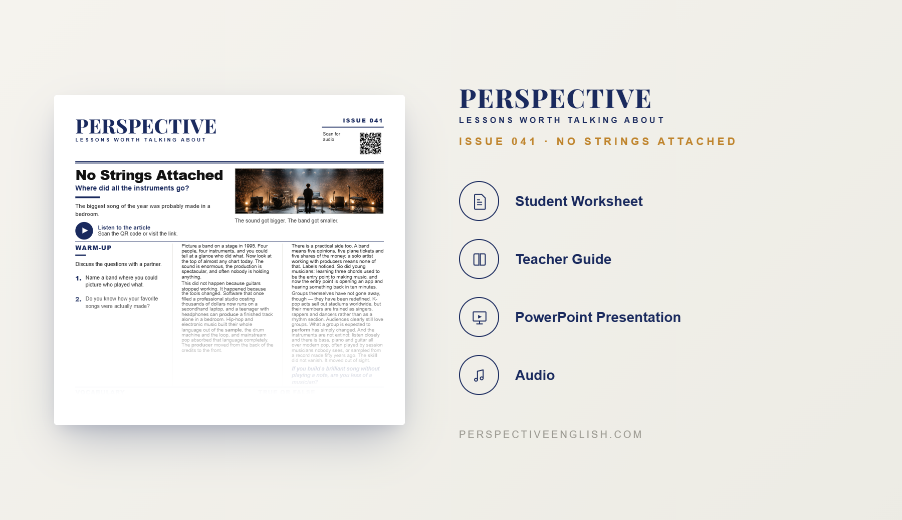

ISSUE 041
Modern Music Instruments ESL Lesson
Where did all the instruments go?
A ready-to-teach ESL lesson exploring how software, producers, sampling and digital technology have transformed modern music, and asking whether playing a traditional instrument still defines what it means to be a musician.
Collection 08 includes Issues 041–045.

LESSON PREVIEW

ABOUT THIS LESSON
About This Modern Music ESL Lesson
Picture a band on stage thirty years ago and you could probably identify exactly who played what. Today, some of the world's biggest songs can be created almost entirely on a laptop. This B1–B2 modern music ESL lesson explores how the tools used to make music have changed dramatically.
Students examine the rise of producers, sampling, drum machines, loops and affordable music software, and consider why traditional bands have become less visible in mainstream pop. They also explore how technology has made it possible for one person to create a professional-sounding track from a bedroom.
The lesson then asks a bigger question: what actually makes someone a musician? Students compare guitarists, singers, producers, songwriters, DJs, session musicians and even people using AI to generate songs before creating their own definition of musicianship.
FROM THE ARTICLE
WHAT'S INCLUDED
What's Included in No Strings Attached?
- Magazine-style B1–B2 ESL student worksheet
- Original reading and audio about modern music and technology
- Vocabulary and true-or-false comprehension activities
- Discussion questions about bands, instruments, sampling and musicianship
- Who Counts as a Musician? critical-thinking activity
- Eight musician profiles for students to evaluate and debate
- Build Your Own Act speaking challenge
- 150–200 word opinion-writing task
- Teacher guide and complete answer key
- Ready-to-use classroom presentation
GET THE COMPLETE LESSON
Ready to Teach No Strings Attached?
Get the complete modern music ESL lesson individually, or get Issues 041–045 together in Perspective Collection 08.
Secure checkout and instant digital delivery through Payhip.